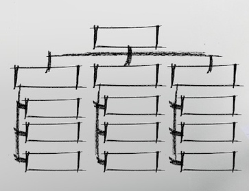
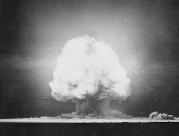

About
For information about the Department as a whole.
Organization

For information about the organization of the Department.
History

For information on the Department's history.
Newsroom
For publications and important notices by Department agencies.
Library
For an archive of records related to the Department's operations.
Contact
For information on how to contact the Secretary of Otherworldly Affairs..